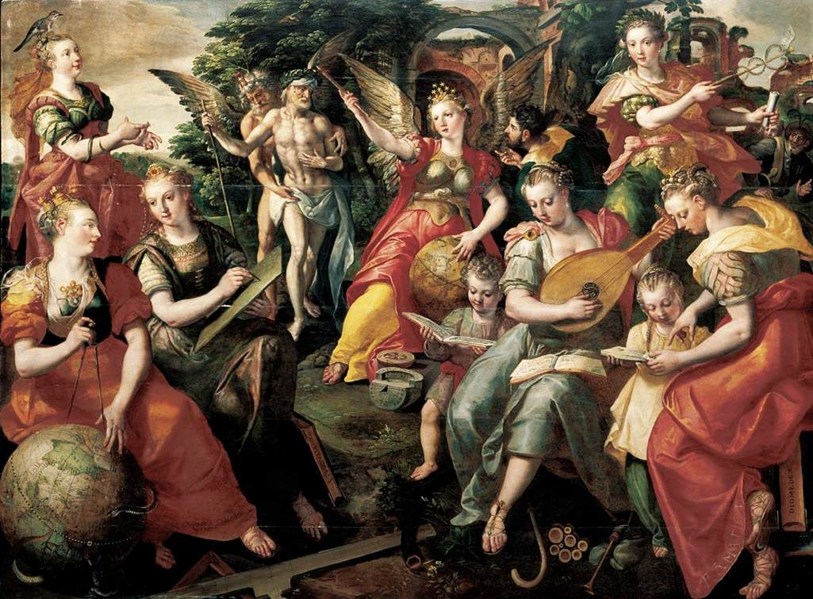
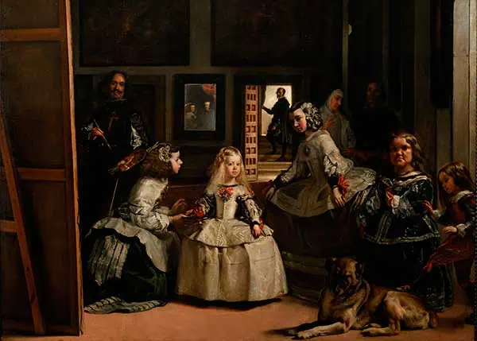
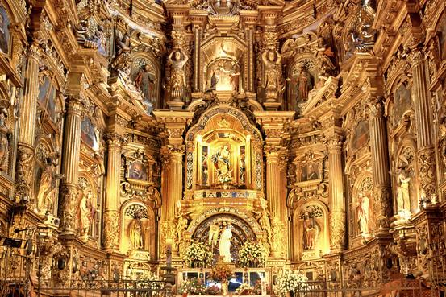

Presentación del Arte de la Galería
Siglo de Oro Español
El Siglo de Oro español, que abarca los siglos XVI y XVII, fue un período de gran esplendor cultural en España. Durante el Renacimiento, artistas como El Greco fusionaron las influencias renacentistas italianas con su propia expresión artística única. El Barroco español, representado por maestros como Velázquez y Zurbarán, se caracterizó por su dramatismo y su atención al detalle.

Renacimiento Español
El Renacimiento Español fue un período de gran esplendor cultural en España durante los siglos XV y XVI, marcado por una explosión de creatividad en arte, arquitectura y literatura. Inspirado en las corrientes italianas, pero con características distintivas españolas, este movimiento cultural reflejó la unificación del país y el florecimiento de la cultura bajo los Reyes Católicos. Grandes artistas como El Greco dejaron su huella en este período, creando obras que combinaban la elegancia renacentista con la espiritualidad española..

Surrealismo Español
En el siglo XX, el surrealismo tuvo un impacto significativo en el arte español. Salvador Dalí, uno de los artistas más destacados del movimiento, exploró el subconsciente a través de imágenes oníricas y simbólicas. Su obra es conocida por su surrealismo provocativo y su uso innovador de la técnica.

Barroco Español
El Barroco Español fue un período artístico y cultural que se desarrolló en España durante los siglos XVII y parte del XVIII, caracterizado por su dramatismo, emoción y riqueza decorativa. Surgió como una expresión de la Contrarreforma católica, buscando impresionar y emocionar al espectador con obras de arte que transmitieran poderío religioso y emocional. La arquitectura barroca española se destacó por su ornamentación exuberante y su uso dramático de la luz y la sombra. Grandes maestros como Diego Velázquez y Francisco de Zurbarán dejaron un legado duradero con sus pinturas, que capturaban la esencia espiritual y emocional del período.
Obras Emblemáticas
Siglo de Oro Español
.jpg)
Don Quijote de la Mancha
Publicada en dos partes en 1605 y 1615, es una de las obras más importantes de la literatura española y universal. Es una novela que mezcla la sátira, la aventura y la reflexión sobre la realidad.
Autor: Miguel de Cervantes

Las Meninas
Este cuadro es una obra maestra que destaca por su complejidad visual, su composición magistral y su habilidad para desafiar las convenciones artísticas de la época. Es una de las pinturas más analizadas y discutidas en la historia del arte.
Autor: Diego Velázquez

El Escorial
Esta monumental obra arquitectónica es un símbolo del poder y la grandeza del Imperio español en su apogeo. Su diseño innovador y su impacto cultural lo convierten en una de las construcciones más importantes del período.
Autor: Juan Bautista de Toledo y Juan de Herrera
La vida es sueño
Esta obra teatral es una joya del teatro barroco español, conocida por su profundidad filosófica, su exploración de temas existenciales y su impactante dramaturgia. Ha sido objeto de estudio y admiración durante siglos.
Autor: Pedro Calderón de la Barca
La rendición de Breda
Esta pintura representa un momento histórico crucial y es un ejemplo sobresaliente del talento de Velázquez para capturar la emoción y la tensión en una escena. Su influencia en el arte militar y político es significativa.
Autor: Diego Velázquez
Surrealismo Español

La persistencia de la memoria
Esta icónica pintura, creada en 1931, es quizás la obra más famosa de Dalí y una de las imágenes más reconocidas en la historia del arte. Sus relojes blandos y el paisaje onírico han llegado a simbolizar el surrealismo en su conjunto.
Autor: Salvador Dalí

La noche estrellada
Aunque no es estrictamente una obra surrealista en el sentido tradicional, esta pintura, creada en 1889, ha sido considerada precursora del movimiento surrealista debido a su estilo expresionista y su representación evocadora del paisaje nocturno.
Autor: Vincent van Gogh

El elefante delante del espejo
Esta obra, creada en 1948, es otra pieza emblemática del surrealismo de Dalí. Presenta una escena absurda y fantástica en la que un elefante sostiene con su trompa un obelisco con un huevo encima, mientras es observado por una figura masculina.
Autor: Salvador Dalí

El gran masturbador
Esta pintura, creada en 1929, es una de las obras más emblemáticas de Dalí. Presenta una figura central en un paisaje onírico, con elementos surrealistas como relojes derretidos y formas abstractas. La obra refleja los intereses obsesivos y las preocupaciones psicológicas del artista, y es un ejemplo destacado del surrealismo psicológico.
Autor: Salvador Dalí

El amante
Esta pintura, creada en 1928, es una de las obras más reconocidas del artista belga René Magritte. En ella, Magritte representa una pareja besándose, pero en lugar de rostros, ambos tienen envueltos sus cabezas en tela blanca. Esta imagen desafía las convenciones de la representación figurativa y juega con la idea de la identidad y la intimidad.
Autor: René Magritte
Artistas Principales

Miguel de Cervantes
Miguel de Cervantes fue un novelista, poeta y dramaturgo español. Es conocido principalmente por su obra maestra "Don Quijote de la Mancha", que es considerada la primera novela moderna y una de las mejores obras literarias de todos los tiempos.
Contribución: Revolucionó la literatura con la creación de la novela moderna.

Diego Velázquez
Diego Velázquez fue un pintor español del Siglo de Oro, considerado uno de los máximos exponentes de la pintura barroca. Sus obras maestras, como "Las Meninas", han influido profundamente en el arte occidental.
Contribución: Innovador en el uso de la luz y la perspectiva, creando composiciones visualmente complejas.
Salvador Dalí
Salvador Dalí fue un destacado pintor surrealista español, conocido por sus impactantes y oníricas imágenes surrealistas. Su obra "La persistencia de la memoria" es uno de los íconos del arte del siglo XX.
Contribución: Líder del movimiento surrealista, explorando lo subconsciente y los sueños en el arte.

Francisco de Goya
Francisco de Goya fue un pintor y grabador español, cuyas obras reflejan la turbulencia de su tiempo. Es conocido por sus retratos de la corte y sus pinturas oscuras y satíricas.
Contribución: Precursor del arte moderno, con una obra que abarca desde el rococó hasta el romanticismo.

Joan Miró
Joan Miró fue un pintor, escultor y ceramista español, considerado uno de los máximos representantes del surrealismo. Su obra se caracteriza por un lenguaje pictórico único y la exploración del subconsciente.
Contribución: Innovador en la abstracción y el uso de colores vivos y formas orgánicas.
Francisco de Quevedo
Francisco de Quevedo y Villegas (1580-1645) fue un influyente escritor del Siglo de Oro español, conocido por su agudo ingenio y su estilo barroco. Escribió poesía y prosa, destacando por su sátira y su visión crítica de la sociedad de su época. Entre sus obras más célebres se encuentra "La vida del Buscón llamado Don Pablos". Su legado literario sigue siendo relevante en la literatura española hasta hoy.
Contribución: La sátira social y el estilo barroco de Quevedo dejaron una marca duradera en la literatura española del Siglo de Oro.
El Greco
El Greco fue un pintor renacentista español de origen griego, conocido por su estilo dramático y expresionista. Sus obras se caracterizan por figuras alargadas y colores intensos.
Contribución: Su estilo único influyó en el arte barroco y en el expresionismo moderno.
Remedios Varo
Remedios Varo (1908-1963) fue una pintora surrealista española, cuya obra se caracteriza por su imaginación y simbolismo. Emigró a México, donde desarrolló gran parte de su carrera artística, fusionando elementos del misticismo, la alquimia y la ciencia en sus pinturas.
Contribución: Fusionar elementos del misticismo, la alquimia y la ciencia en el arte surrealista.

Pedro Calderón de la Barca
Pedro Calderón de la Barca (1600-1681) fue un destacado dramaturgo español del Siglo de Oro. Es conocido por obras como "La vida es sueño", que exploran temas como el destino, la realidad y la libertad. Su estilo teatral barroco y su habilidad para crear personajes complejos lo convirtieron en una figura influyente en la literatura española.
Contribución: Su influencia en el teatro español del Siglo de Oro, especialmente con su obra "La vida es sueño".
Luis de Góngora
Luis de Góngora (1561-1627) fue un influyente poeta español del Siglo de Oro, conocido por su estilo culterano y obras como "La Fábula de Polifemo y Galatea". Nacido en Córdoba, su genio literario dejó un legado perdurable en la poesía española.
Contribución: La principal contribución de Luis de Góngora fue su innovación en la poesía española del Siglo de Oro, introduciendo el conceptismo y el estilo culterano.
Formulario de Inscripción para Eventos
Calendario de Exposiciones
| Evento | Fecha | Ubicación | Descripción |
|---|---|---|---|
| Exposición de Arte Moderno | 15 de Junio, 2024 | Museo de Arte Contemporáneo | Una colección impresionante de arte moderno de artistas contemporáneos de todo el mundo. |
| Retrospectiva de Salvador Dalí | 22 de Julio, 2024 | Galería Nacional de Arte | Un recorrido por la vida y obra del maestro del surrealismo, Salvador Dalí. |
| Exposición de Escultura Contemporánea | 5 de Agosto, 2024 | Centro de Arte y Cultura | Descubre las esculturas innovadoras de los artistas contemporáneos más prometedores. |
| Galería de Fotografía Urbana | 10 de Septiembre, 2024 | Espacio Fotográfico | Fotografías que capturan la esencia de la vida urbana en diferentes ciudades del mundo. |
| Festival de Arte Digital | 25 de Octubre, 2024 | Centro de Convenciones Digital | Explora las últimas innovaciones en arte digital y multimedia. |
| Exposición de Pintura Renacentista | 15 de Noviembre, 2024 | Museo de Arte Clásico | Una exhibición de las obras maestras del Renacimiento italiano y europeo. |
| Bienal de Arte Contemporáneo | 5 de Diciembre, 2024 | Parque de las Artes | Una muestra de las obras de los artistas contemporáneos más influyentes del momento. |